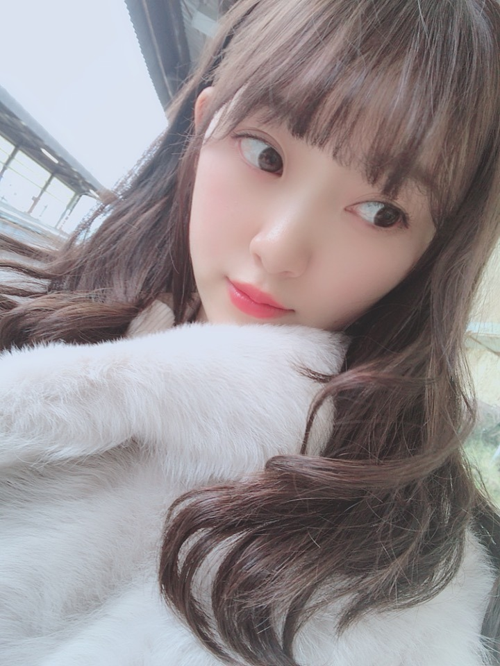
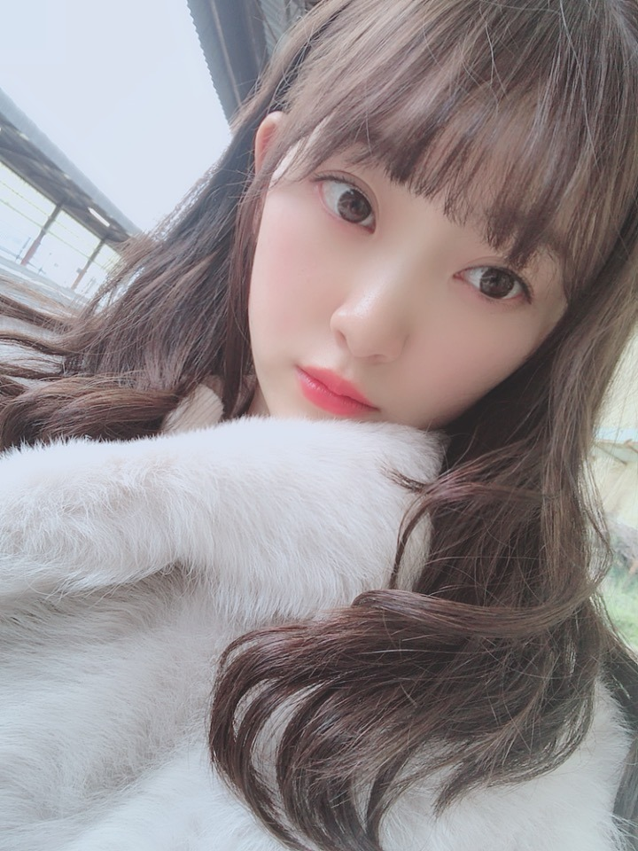
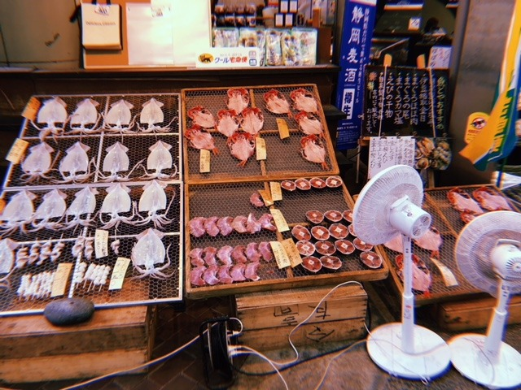
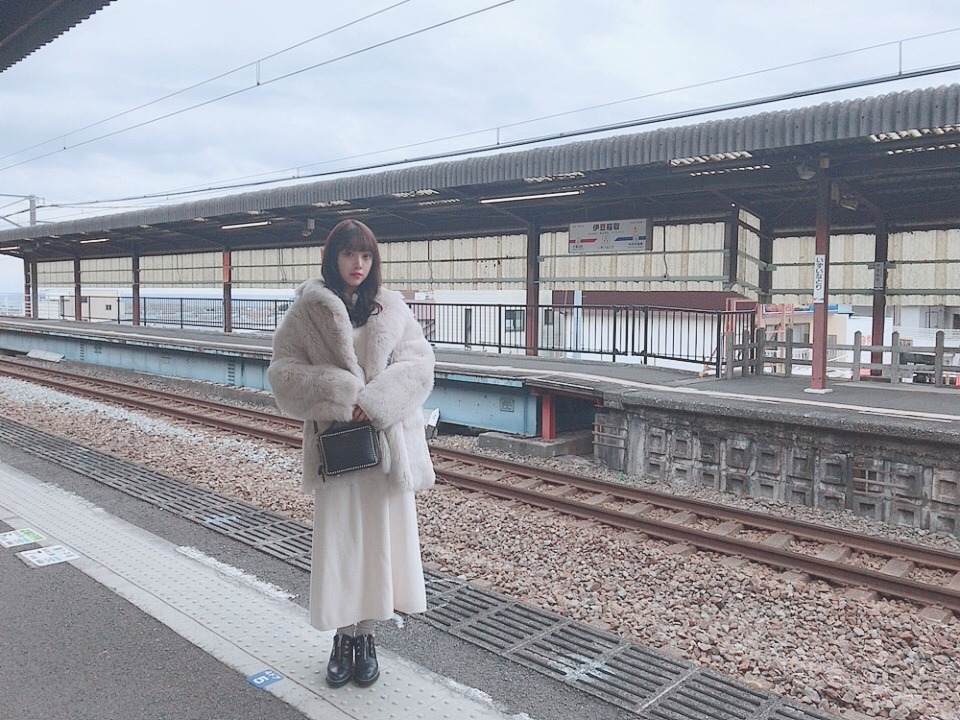

2019/0112Satいい湯だなアハハン
温泉街に行ったら買うもの
たこわさび
アジの干物
温泉まんじゅう
おかき
しょっぱい梅干し
です！
梅干しはとびきりしょっぱいのがすき！
先日、母と海の方へ
温泉旅行に行ってきましたー。
前はお母さんに連れてってもらっていた旅行を
今は私が連れていけることが嬉しくて、
少しでも親孝行になってたらいいな...
毎年こうして旅行に行っているけど
一緒にどこかへ行ける1回1回を
大切にしないとなぁって改めて思いました✨



たくさん海鮮食べて温泉に入って
肌がもちもち、幸せです☺︎
いろんな電車にも乗りました〜
まったりお話ししたり寝たり
相変わらずのマイペース親子です

お母さんの写真とか動画たくさん撮りすぎて
携帯の容量が不安。笑
また行けますように！
いいリフレッシュになりました✨✨
あ、メールの方でも
写真送りますね☺︎
待っとって〜
では
ps.髪色明るくなってきた...
好き？かな？
2019/01/12 13:12
コメント(526)
温泉街の情景、ノスタルジックで良い雰囲気。
親孝行する子って良いね(^^)
髪色のせいなのか、ボリューム感があるね！
エクステでは無いよね？（笑）
親孝行する子って良いね(^^)
髪色のせいなのか、ボリューム感があるね！
エクステでは無いよね？（笑）
温泉饅頭にしょっぱい梅干し良いね(*^^*)
温泉行きたいなー(^∇^)
温泉行きたいなー(^∇^)
3枚目の写真で干して
あるイカ凄いペラペラだね？
紐付けたら凧揚げ出来そう…
タコじゃないからイカ揚げか！
干物なのに揚げ物て
あるイカ凄いペラペラだね？
紐付けたら凧揚げ出来そう…
タコじゃないからイカ揚げか！
干物なのに揚げ物て
未央奈！(*´꒳`*)
温泉街に行ったら買うもの多過ぎない？？笑
たしかにアジの干物とかあるよね、あれ昔からどこの温泉のお土産コーナーに置いてある気がするのだけどなぜなんだろうね？笑
梅干しも色々有るよね〜しょっぱいの、酸っぱいの。小玉に大玉。硬めやふにゃふにゃの。しそカツオや、蜂蜜等々。
私は酸っぱさ抑えめ、どこか甘めなしそカツオか、大玉のふにゃふにゃ南高梅が好きかな〜♬
未央奈が母を旅行に連れて行ってあげれる様になったっていう話、ほっこりですね。(*´ω｀*)未央奈が思っているより親孝行出来ているさ。旅行に限らず、グッズがでたり、紅白歌合戦にでたり。
一期一会。旅行に限らず、全ての出会いや出来事全てが貴重な物なのでしょうね。中でも未央奈の特に大切な存在であるお母様との時間是非大切にして下さいませ。(*´꒳`*)
写真美女過ぎる。。(*´ω｀*)確かに未央奈はショート似合うのだけれども、私はやっぱりミドルからロングの髪の毛好きだな〜♬
何かこうね、髪が長いとまとってる雰囲気が女性ーっ！って感じだし、サラサラしてるとすっごく触りたくたるし、やっぱり女性の髪の毛って男性からみたらやっぱりグッとくるし凄く良いんですよ〜♬
4枚目のしゃしんの未央奈、また雰囲気が全然違うー！！なんか透き通った雰囲気があって雪の妖精って感じです！(例えがファンタジー過ぎるかな？笑) この子が近くにいたら絶対怪我したり汚れたりしない様に守らなきゃ感の使命感が爆発しそうですね(>_<)
駅のホームの写真の未央奈、いい女過ぎません？？こんな子駅に居たら絶対に目が離せないです〜。ゴージャスだし、可愛いし、綺麗だし凄過ぎです♬(*´꒳`*)
未央奈！(*´꒳`*)
髪色可愛いよ！そしてね、髪色変えるのやっぱり気にしている様だけど大丈夫だよ！元々好きな気持ちが振り切っているから仮に似合わない髪型になっても、そんな未央奈も大好きだよ！本当に。
そして多分未央奈はどんな髪色も似合うよ！今の色も勿論似合ってるし、茶色でも、ギャル、ホリッピーの時の金髪も、乃木坂的にNGだとは思うけど銀髪も絶対似合う♬(*´ω｀*)
だから大丈夫。バッチリ似合ってて可愛いです！(*´꒳`*)
では！！
温泉街に行ったら買うもの多過ぎない？？笑
たしかにアジの干物とかあるよね、あれ昔からどこの温泉のお土産コーナーに置いてある気がするのだけどなぜなんだろうね？笑
梅干しも色々有るよね〜しょっぱいの、酸っぱいの。小玉に大玉。硬めやふにゃふにゃの。しそカツオや、蜂蜜等々。
私は酸っぱさ抑えめ、どこか甘めなしそカツオか、大玉のふにゃふにゃ南高梅が好きかな〜♬
未央奈が母を旅行に連れて行ってあげれる様になったっていう話、ほっこりですね。(*´ω｀*)未央奈が思っているより親孝行出来ているさ。旅行に限らず、グッズがでたり、紅白歌合戦にでたり。
一期一会。旅行に限らず、全ての出会いや出来事全てが貴重な物なのでしょうね。中でも未央奈の特に大切な存在であるお母様との時間是非大切にして下さいませ。(*´꒳`*)
写真美女過ぎる。。(*´ω｀*)確かに未央奈はショート似合うのだけれども、私はやっぱりミドルからロングの髪の毛好きだな〜♬
何かこうね、髪が長いとまとってる雰囲気が女性ーっ！って感じだし、サラサラしてるとすっごく触りたくたるし、やっぱり女性の髪の毛って男性からみたらやっぱりグッとくるし凄く良いんですよ〜♬
4枚目のしゃしんの未央奈、また雰囲気が全然違うー！！なんか透き通った雰囲気があって雪の妖精って感じです！(例えがファンタジー過ぎるかな？笑) この子が近くにいたら絶対怪我したり汚れたりしない様に守らなきゃ感の使命感が爆発しそうですね(>_<)
駅のホームの写真の未央奈、いい女過ぎません？？こんな子駅に居たら絶対に目が離せないです〜。ゴージャスだし、可愛いし、綺麗だし凄過ぎです♬(*´꒳`*)
未央奈！(*´꒳`*)
髪色可愛いよ！そしてね、髪色変えるのやっぱり気にしている様だけど大丈夫だよ！元々好きな気持ちが振り切っているから仮に似合わない髪型になっても、そんな未央奈も大好きだよ！本当に。
そして多分未央奈はどんな髪色も似合うよ！今の色も勿論似合ってるし、茶色でも、ギャル、ホリッピーの時の金髪も、乃木坂的にNGだとは思うけど銀髪も絶対似合う♬(*´ω｀*)
だから大丈夫。バッチリ似合ってて可愛いです！(*´꒳`*)
では！！
未央奈～こんばんは！
ぽてとです！
親子水入らずでゆっくりできて
良かったやん♪
髪色すきやでー♪ヽ(´▽｀)/
ぽてとです！
親子水入らずでゆっくりできて
良かったやん♪
髪色すきやでー♪ヽ(´▽｀)/
未央ちゃん大好きです！！僕も昨日海鮮丼食べたよ！！
未央奈ちゃん、こんばんは(^o^)/
お母さんと温泉旅行ですか( ＾∀＾)
お母さんの誕生日ですか？
なんかお母さんより未央奈の方が楽しんでるように見えるけど(^_^;)
この髪型も髪色も好きです( ＾∀＾)
お母さんと温泉旅行ですか( ＾∀＾)
お母さんの誕生日ですか？
なんかお母さんより未央奈の方が楽しんでるように見えるけど(^_^;)
この髪型も髪色も好きです( ＾∀＾)
未央奈～☆☆
友達と色んなところへ出かけることが多い未央奈だけど、
お母さんとの時間も大事にしていて、
しかも未央奈が旅行へ連れて行ってるなんて
未央奈は、本当に優しいな～
温泉街ならではの食べ物って、
その場で見るとめっちゃ美味しそうに見えるし、
実際食べても美味しいから、ついつい手が伸びちゃうよね。
写真のイカにも思わず手が～笑
お母さんが撮った写真や動画の量が、嬉しさの大きさを
表してるのかもね。
写真楽しみにしてるよー
未央奈、このリフレッシュ最高だね！
あ、髪色は言われてみるとそうかも知れないけど、
髪色が変わっても、その時その時の未央奈に似合ってて
自然に可愛く見えるから、もちろん好きだよ。
友達と色んなところへ出かけることが多い未央奈だけど、
お母さんとの時間も大事にしていて、
しかも未央奈が旅行へ連れて行ってるなんて
未央奈は、本当に優しいな～
温泉街ならではの食べ物って、
その場で見るとめっちゃ美味しそうに見えるし、
実際食べても美味しいから、ついつい手が伸びちゃうよね。
写真のイカにも思わず手が～笑
お母さんが撮った写真や動画の量が、嬉しさの大きさを
表してるのかもね。
写真楽しみにしてるよー
未央奈、このリフレッシュ最高だね！
あ、髪色は言われてみるとそうかも知れないけど、
髪色が変わっても、その時その時の未央奈に似合ってて
自然に可愛く見えるから、もちろん好きだよ。
温泉いいなぁ～！！
岐阜は海が無いから海を見るとテンション上がるよね！
岐阜県民あるある(笑)
でも、やっぱ川の方が好き(￣ー￣)ｂ
清流のまちだからね！
『まるっと！ぎふ』観ました！！
堀ちゃんが岐阜の話をしてくれたり、岐阜弁を聞くだけで嬉しくなります！
栗きんとんを頂いたときの笑顔最高でした(^ー^)
個人的にはショートでナチュナルメークが似合うと思います。
堀ちゃんこんばんは！
いつもブログ更新してくれてありがとうございます、堀ちゃんのブログもほんとに大好きです(o^^o)♩
お母さんのと温泉旅行、素敵ですね〜( ´ ▽ ` )♩
堀ちゃんがお母さんを連れていけるようになったのが嬉しくて、とありますが、お母さんはきっとそれもよりもさらに嬉しく感じていることでしょう(o^^o)
親孝行したいという気持ちも大事ですが、それを実行すること伝えることにやはり意味があると思いますので、堀ちゃんはいま最高の親孝行ができているはずです( ´ ▽ ` )
僕も何かプレゼントしたりはするんですが、あまり感謝とかを言葉で伝えられてないので、今後はその点もしっかりしたいと思います( ´ 〜 ` )笑
そして何より堀ちゃんがその時間を、楽しめて癒されて幸せだったというのが、僕にとって一番嬉しいです(o^^o)♩
写真も気長に待っとるけんね〜( ´ ▽ ` )笑
そしてそして、前のブログで触れてくれた「だいたいぜんぶ展」始まりましたねー！
まだ行けてないですが、友達と東京遠征して絶対に行きます！予定は立っています！笑
大好きな堀ちゃん、乃木坂46の歴史しっかり目に焼き付けに行きます(o^^o)
楽しみすぎて待ちきれないー！( ´ ▽ ` )
2019年、仕事も始まり日常に戻っていますが、今年も堀ちゃんのブログやモバメ、755にめちゃめちゃ癒され楽しませてもらっています(o^^o)
本当にいつもありがとうございます！
髪色明るいのももちろん好きです、めちゃめちゃ可愛いです( ´ ▽ ` )♩
色んな堀ちゃんが、全ての堀ちゃんが大好きです(o^^o)
ではでは、またコメントさせてくださいー！
いつもブログ更新してくれてありがとうございます、堀ちゃんのブログもほんとに大好きです(o^^o)♩
お母さんのと温泉旅行、素敵ですね〜( ´ ▽ ` )♩
堀ちゃんがお母さんを連れていけるようになったのが嬉しくて、とありますが、お母さんはきっとそれもよりもさらに嬉しく感じていることでしょう(o^^o)
親孝行したいという気持ちも大事ですが、それを実行すること伝えることにやはり意味があると思いますので、堀ちゃんはいま最高の親孝行ができているはずです( ´ ▽ ` )
僕も何かプレゼントしたりはするんですが、あまり感謝とかを言葉で伝えられてないので、今後はその点もしっかりしたいと思います( ´ 〜 ` )笑
そして何より堀ちゃんがその時間を、楽しめて癒されて幸せだったというのが、僕にとって一番嬉しいです(o^^o)♩
写真も気長に待っとるけんね〜( ´ ▽ ` )笑
そしてそして、前のブログで触れてくれた「だいたいぜんぶ展」始まりましたねー！
まだ行けてないですが、友達と東京遠征して絶対に行きます！予定は立っています！笑
大好きな堀ちゃん、乃木坂46の歴史しっかり目に焼き付けに行きます(o^^o)
楽しみすぎて待ちきれないー！( ´ ▽ ` )
2019年、仕事も始まり日常に戻っていますが、今年も堀ちゃんのブログやモバメ、755にめちゃめちゃ癒され楽しませてもらっています(o^^o)
本当にいつもありがとうございます！
髪色明るいのももちろん好きです、めちゃめちゃ可愛いです( ´ ▽ ` )♩
色んな堀ちゃんが、全ての堀ちゃんが大好きです(o^^o)
ではでは、またコメントさせてくださいー！
髪型も髪色も大好き❤︎
ロングのみおちゃん本当に可愛くて大好きです！
ロングのみおちゃん本当に可愛くて大好きです！
ブログ更新ありがと～
ザンビ待ちきれない～
ザンビ待ちきれない～
超絶鬼カワエエヱ！！！！！！！！！！！！！！！！！！！！！！！！！！！！！
ちゃっす！未央奈！
こんばんは〜！
タイトル。笑った。
いい湯だなアハハン
温泉とかお風呂とかに入って気分良いとときどき歌うわ。笑
お、温泉街に行ったら買うもの！
いっぱいあるなぁ。笑
しょっぱい梅干し。表現笑った。
ハチミツ漬けじゃないほうかな。
こっちは温泉まんじゅうが大好きで旅館の部屋入ったら真っ先に茶菓子セットみたいな箱を開けて温泉まんじゅうがあるか見るぐらい好き。笑
念願の温泉旅行！おめでと！
親孝行。素晴らしいです。。
未央奈のそういう、大切な人をちゃんと大事にするとこ大好き☺︎
うわぁーかわいいー！
最高！写真ありがとっ。好きすぎる。。
おー、干物いっぱい！あじの干物おいしいよね。あじはお刺身も干物も好き。
ほっこり☺︎
あ、前髪分けた美人さん♪
モコモコ。
伊豆稲取かぁ。
いろんな電車。笑 熱海から行ったのかな。
マイペース親子。笑
リフレッシュできてよかったね！✨
動画みせてー！！！
モバメで写真いっぱいきたよ！ありがとう！！
ところで
しょっぱい梅干しってどう作られてるか知ってる？
梅の実を採ってきてただ単に干してれば梅干しになるわけではないんです！
1ヶ月ぐらい塩漬けしてから干して、さらに冷暗所で長期間寝かせて熟成させることでしょっぱい梅干しができるんだ〜
こっちの個人的な考えなんだけど、楽しいだけじゃなくて、苦しいこととか悲しいこととかあるしょっぱい人生のほうが人は成長できると思うんだよね。
だからしょっぱい梅干しになるためにもつらいこととかに粘り強く立ち向かっていかないと！だね！
まぁ、しょっぱい梅干しが好きな未央奈なら大丈夫だよね！笑
これからも応援しています。(^-^)
こっちもがんばらないとっ！
急に梅干しから人生の話を展開していったんだけど、モバメでちょっと悔しそうに思えたので書いてみました。てへっ。笑
では！おやすみ！おやすみ！✌️
p.s. めっちゃ明るいわけではないからこっちとしては好き。だよ。♡
こんばんは〜！
タイトル。笑った。
いい湯だなアハハン
温泉とかお風呂とかに入って気分良いとときどき歌うわ。笑
お、温泉街に行ったら買うもの！
いっぱいあるなぁ。笑
しょっぱい梅干し。表現笑った。
ハチミツ漬けじゃないほうかな。
こっちは温泉まんじゅうが大好きで旅館の部屋入ったら真っ先に茶菓子セットみたいな箱を開けて温泉まんじゅうがあるか見るぐらい好き。笑
念願の温泉旅行！おめでと！
親孝行。素晴らしいです。。
未央奈のそういう、大切な人をちゃんと大事にするとこ大好き☺︎
うわぁーかわいいー！
最高！写真ありがとっ。好きすぎる。。
おー、干物いっぱい！あじの干物おいしいよね。あじはお刺身も干物も好き。
ほっこり☺︎
あ、前髪分けた美人さん♪
モコモコ。
伊豆稲取かぁ。
いろんな電車。笑 熱海から行ったのかな。
マイペース親子。笑
リフレッシュできてよかったね！✨
動画みせてー！！！
モバメで写真いっぱいきたよ！ありがとう！！
ところで
しょっぱい梅干しってどう作られてるか知ってる？
梅の実を採ってきてただ単に干してれば梅干しになるわけではないんです！
1ヶ月ぐらい塩漬けしてから干して、さらに冷暗所で長期間寝かせて熟成させることでしょっぱい梅干しができるんだ〜
こっちの個人的な考えなんだけど、楽しいだけじゃなくて、苦しいこととか悲しいこととかあるしょっぱい人生のほうが人は成長できると思うんだよね。
だからしょっぱい梅干しになるためにもつらいこととかに粘り強く立ち向かっていかないと！だね！
まぁ、しょっぱい梅干しが好きな未央奈なら大丈夫だよね！笑
これからも応援しています。(^-^)
こっちもがんばらないとっ！
急に梅干しから人生の話を展開していったんだけど、モバメでちょっと悔しそうに思えたので書いてみました。てへっ。笑
では！おやすみ！おやすみ！✌️
p.s. めっちゃ明るいわけではないからこっちとしては好き。だよ。♡
好き
堀さん、こんばんは。ブログ更新してくれて嬉しいです。
温泉良かったですね。電車がボックス席だったりしたら逃げ恥を思い出します。
旅行自体のプレゼントも嬉しいと思いますけど、それを一緒に行けることは更に嬉しいことだと思います。堀さんは娘の中の娘ですね。孫みたいで紛らわしいので訂正します。堀さんは堀さんのお母さんの娘ですね。
そういえば親子でお互い写真撮り合ってるということは、お互い写真上手くなっていってるんですね。堀さんのだいたいぜんぶ展もいつかやって欲しいです。
髪は明るめの方が巻き甲斐あって綺麗ですね。色んな髪型みれるの楽しみです。
あとar見ました。ベレー帽のがスカート鮮やかだし全体的に好みです。堀さんは本当に白が似合うというか白付いてますね。
NHK岐阜のサイトでインタビューも見ましたけど、笑顔でこぼれる白い歯や透き通る白い肌に最後はおかゆまで白くて面白かったです。出演の白羽の矢が立ったおかげで堀さんの岐阜愛が白眉なことが白日の下になって良かったです。あ、良いにも白がありますね。
温泉良かったですね。電車がボックス席だったりしたら逃げ恥を思い出します。
旅行自体のプレゼントも嬉しいと思いますけど、それを一緒に行けることは更に嬉しいことだと思います。堀さんは娘の中の娘ですね。孫みたいで紛らわしいので訂正します。堀さんは堀さんのお母さんの娘ですね。
そういえば親子でお互い写真撮り合ってるということは、お互い写真上手くなっていってるんですね。堀さんのだいたいぜんぶ展もいつかやって欲しいです。
髪は明るめの方が巻き甲斐あって綺麗ですね。色んな髪型みれるの楽しみです。
あとar見ました。ベレー帽のがスカート鮮やかだし全体的に好みです。堀さんは本当に白が似合うというか白付いてますね。
NHK岐阜のサイトでインタビューも見ましたけど、笑顔でこぼれる白い歯や透き通る白い肌に最後はおかゆまで白くて面白かったです。出演の白羽の矢が立ったおかげで堀さんの岐阜愛が白眉なことが白日の下になって良かったです。あ、良いにも白がありますね。
すきやお
ゆで卵うまぺろんぬでズッキューン♡⊂(ο･㉨･ο）⊃”くまﾃﾞｽ…
ロングヘア堀殿きゃわわうれぴーぽーo(￣◎￣)o ﾊﾞﾌﾞｩ♡
食べ歩きいいよね～抹茶あずき好き好きピーナッツでばいころまるロンo(^-^o)(o^-^)oロンo(^-^o)(o^-^)oロン
ロングヘア堀殿きゃわわうれぴーぽーo(￣◎￣)o ﾊﾞﾌﾞｩ♡
食べ歩きいいよね～抹茶あずき好き好きピーナッツでばいころまるロンo(^-^o)(o^-^)oロンo(^-^o)(o^-^)oロン
お母さんと温泉旅行いいね！
みおなは前からいつも
家族を旅行に連れていくのが夢だって
言ってるもんね
お母さんもうれしかっただろうな♪
乃木坂での夢もきっと叶えてね！
モバメでも写真待ってる！
髪色すきー(^o^)/
みおなは前からいつも
家族を旅行に連れていくのが夢だって
言ってるもんね
お母さんもうれしかっただろうな♪
乃木坂での夢もきっと叶えてね！
モバメでも写真待ってる！
髪色すきー(^o^)/
ブログ更新ありがとう
温泉旅行久しぶりに行ってみたいなぁ
親孝行は20歳超えてからしよっかな
髪明るい方が可愛いと思うよー
温泉旅行久しぶりに行ってみたいなぁ
親孝行は20歳超えてからしよっかな
髪明るい方が可愛いと思うよー
堀ちゃんもう可愛すぎてだーいすき！
韓国から応援してるよ！
好き好き好きーーーー
韓国から応援してるよ！
好き好き好きーーーー
おはようございます。
ドラマザンビ制作キャスト発表ありましたね。
楽しみって言いたいけど関西では放送がないパターンかな？
なんかそんな気がするや残念。
飛鳥ちゃん中心にみんなで頑張ってね。
ではではまたね。
体調気をつけてくださいね。
ほなね堀ちゃん。
ドラマザンビ制作キャスト発表ありましたね。
楽しみって言いたいけど関西では放送がないパターンかな？
なんかそんな気がするや残念。
飛鳥ちゃん中心にみんなで頑張ってね。
ではではまたね。
体調気をつけてくださいね。
ほなね堀ちゃん。
未央奈ちゃん更新ありがとー！
温泉いいなー！
家族で旅行とか長い間したことがないな(>_<)
自分も親孝行として旅行考えてみようかな？
今回もたくさん写真ありがとう！
髪色明るいのも好き！
でも暗いのも好き。
どっちも可愛いから悩む（￣～￣ ）
ではでは
今日も素敵な１日になりますよーに。
温泉いいなー！
家族で旅行とか長い間したことがないな(>_<)
自分も親孝行として旅行考えてみようかな？
今回もたくさん写真ありがとう！
髪色明るいのも好き！
でも暗いのも好き。
どっちも可愛いから悩む（￣～￣ ）
ではでは
今日も素敵な１日になりますよーに。
髪色明るい方もかわいい！！
温泉は最高すぎる！ナイスリフレッシュ！
これからも頑張って下さい！
温泉は最高すぎる！ナイスリフレッシュ！
これからも頑張って下さい！
仲良し親子！
いいリフレッシュだね
お母さんきっと喜んでると思うよ
髪の色似合ってて素敵だよ
いいリフレッシュだね
お母さんきっと喜んでると思うよ
髪の色似合ってて素敵だよ
震えるほどの美人っていう意味が分かったような気がします。
たこわさび～
お酒呑みたくなる～
温泉いいなぁ
それ以上モチモチになったら溶けるんじゃないの？( ; ゜Д゜)
めっちゃかわいい！！
お酒呑みたくなる～
温泉いいなぁ
それ以上モチモチになったら溶けるんじゃないの？( ; ゜Д゜)
めっちゃかわいい！！
髪が伸びると、ぐっと女性らしさが出ますね、個人的には今の長さが大大大好きです。
みおなちゃんえらいねいいリフレッシュできてよかったね可愛いねまた頑張ってね
堀ちゃん、こんにちは。
僕が温泉街に行ったら買うもの・・・・温泉旅館まるごと１個。
わははは・・・。＜(￣▽￣)～＠
旅行、いいよね、僕も大好き！
しかも、ただ楽しんでだけでなく、いろいろ経験することも目的にして旅行に行くっていう僕の思考
そうそう、『だいたいぜんぶ展』のチケット購入したよ
なんか、折りたたみ自転車とか売っていたね（驚）
僕が温泉街に行ったら買うもの・・・・温泉旅館まるごと１個。
わははは・・・。＜(￣▽￣)～＠
旅行、いいよね、僕も大好き！
しかも、ただ楽しんでだけでなく、いろいろ経験することも目的にして旅行に行くっていう僕の思考
そうそう、『だいたいぜんぶ展』のチケット購入したよ
なんか、折りたたみ自転車とか売っていたね（驚）
かわわわ
温泉で親孝行とか良いですね。
家族あっての自分ですから、親へ感謝を示すことはしておいたほうが良いですね。
家族あっての自分ですから、親へ感謝を示すことはしておいたほうが良いですね。
堀ちゃん、大好きだよー
かわいくて泣ける(。´Д⊂)
ブログ更新ありがとー！
温泉いいな～ 私もいきたい！
私もいきたい！
温泉いいな～
今の髪色めっちゃ好き
凄く似合ってます！
オレも来月、伊豆の伊東温泉と熱海温泉行く予定やで、ほっちゃんの買ったものを参考にするね(^ー^)
明るい髪も好きです！長い髪も短い髪も好きです！
親孝行すばらしいよ、未央奈さん。
温泉に入ってゆっくりお母さんと過ごせて良かったね。
次は伊豆急下田に遊びにきてけろ。
奥下田に美肌の良い、温泉があるから一度来てみて。
温泉に入ってゆっくりお母さんと過ごせて良かったね。
次は伊豆急下田に遊びにきてけろ。
奥下田に美肌の良い、温泉があるから一度来てみて。
流し目も素敵です。
好き好きすき！
未央奈♪ヽ(´▽｀)/
家族と温泉旅行かー
最近行ってないなー
未央奈すごく髪伸びたね
ショートもいいけど
ロングも可愛いよ
明日の握手会は今回最後の５部に行くよ
楽しみにしてるよ
またコメントするね
SONYでした❗♪ヽ(´▽｀)/
握手会で髪型お団子見たいな
家族と温泉旅行かー
最近行ってないなー
未央奈すごく髪伸びたね
ショートもいいけど
ロングも可愛いよ
明日の握手会は今回最後の５部に行くよ
楽しみにしてるよ
またコメントするね
SONYでした❗♪ヽ(´▽｀)/
握手会で髪型お団子見たいな
どこのお嬢様ですか？
海の方の温泉、思い浮かぶのは熱海かなぁ。
海産物もありますしね♪
小学生の頃、家族旅行で行ったことがあります。
温泉旅館の、海の幸の三杯酢が美味しかった記憶があるなぁ☆
海産物もありますしね♪
小学生の頃、家族旅行で行ったことがあります。
温泉旅館の、海の幸の三杯酢が美味しかった記憶があるなぁ☆
いい湯だね
俺も温泉旅行が大好きなんだ。
いろんな場所の秘湯巡りでゆったりと話したりするのが一番至福の時間で俺はこういうのが、好きなんだ。
話変わるけど、未央奈の髪色明るくても似合っているよ。
いろんな場所の秘湯巡りでゆったりと話したりするのが一番至福の時間で俺はこういうのが、好きなんだ。
話変わるけど、未央奈の髪色明るくても似合っているよ。
未央奈ちゃんこんばんは‼ありがとうございます‼楽しみにしてます‼頑張ります‼頑張って下さい！お仕事頑張って下さい。ありがとうございます！


ブログ更新ありがとうございます。
温泉旅、いいですね。「たこわさ」なんてまたまた、おじさんぽくってこれまた何とも言えませんね。
それにしても今日の写真、いつもの「かわいい」ではなく、「きれい」になってる写真、改めて新しい未央奈の魅力に気づかされました。
乃木中の着物姿でのツインテール。かなり上の方で結んだこともあってか、かなり可愛かっただけに、急に大人になったみたい‥‥。
それに、連れてもらっていた旅行が、「連れていける」ようになったというのが、またまたうれしいじゃありませんか。
これからも、未央奈の成長ぶり、ずっとずっと応援させてくださいね。よろしくお願いします。